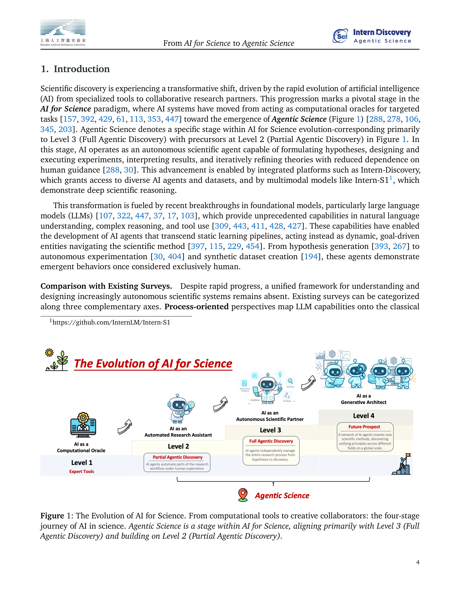
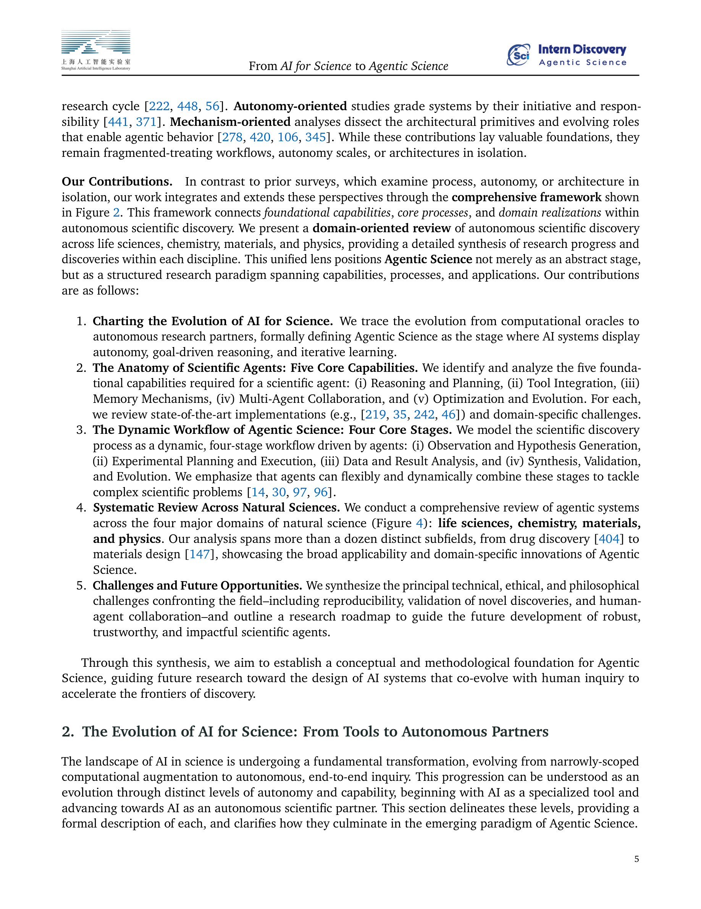
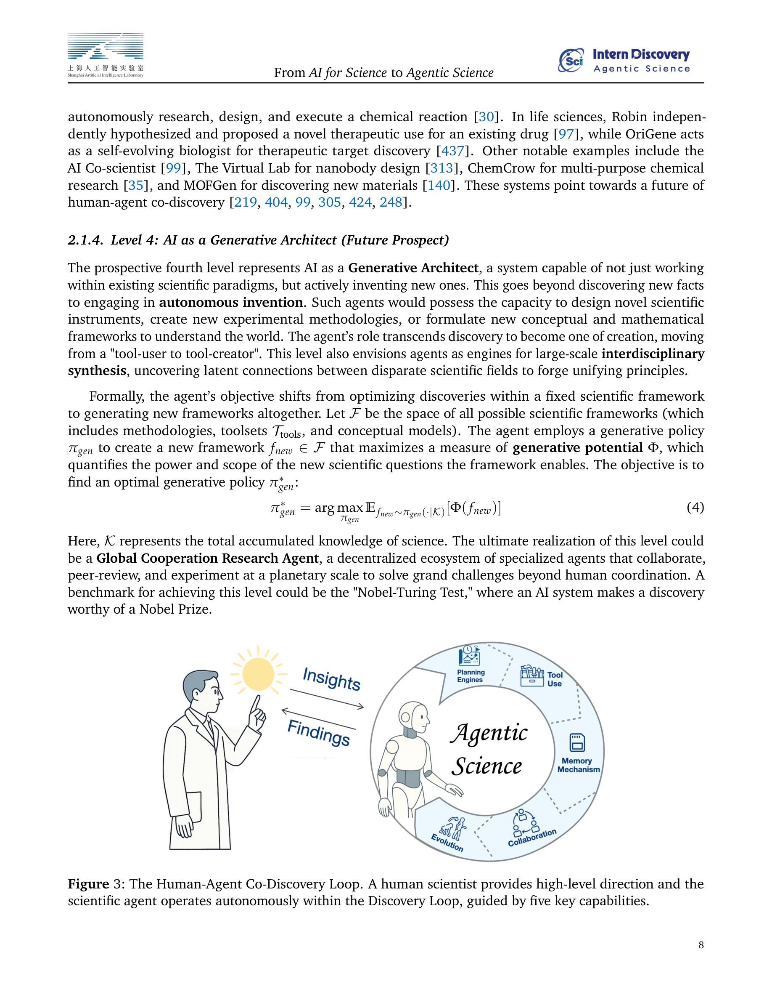
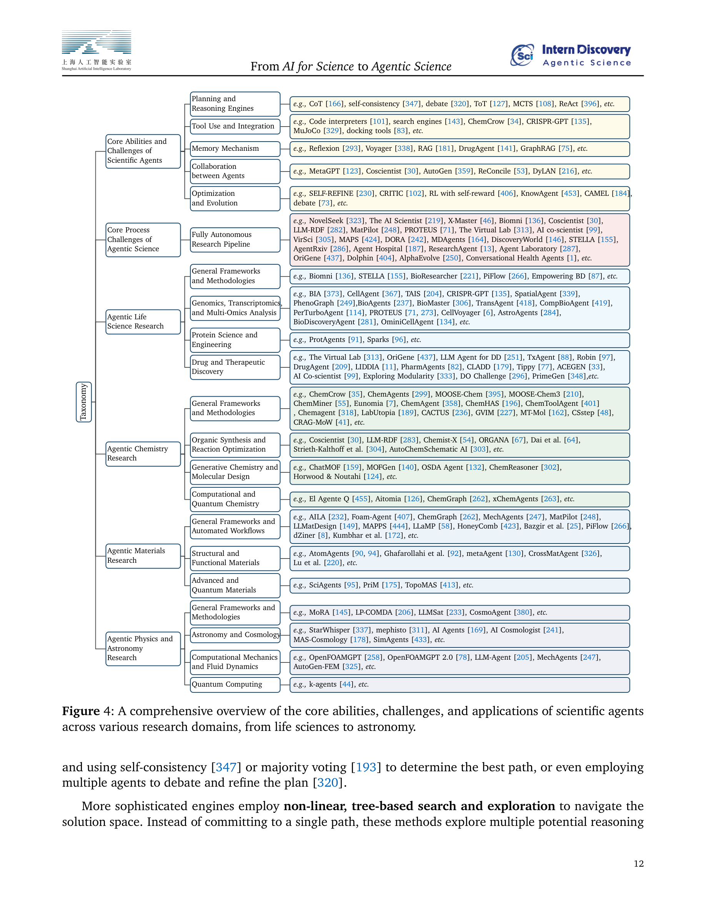
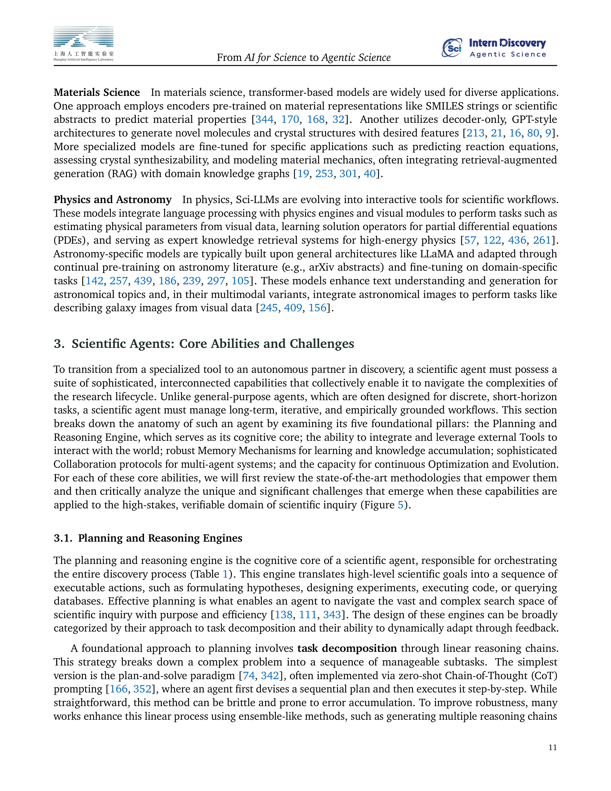

Figure 1
"AI for Science"에서 "Agentic Science"로의 전환을 체계적으로 정리한 포괄적 서베이 논문이다. AI 시스템이 단순 계산 도구(Computational Oracle)에서 자율적 연구 파트너(Autonomous Scientific Partner)로 진화하는 과정을 4단계 프레임워크로 정의하고, 생명과학·화학·재료과학·물리학 4개 도메인에서의 자율적 과학 발견(Autonomous Scientific Discovery) 사례를 종합적으로 리뷰한다. 기존 서베이들이 프로세스·자율성·메커니즘 관점을 개별적으로 다루었던 것과 달리, 이 세 관점을 통합하는 프레임워크를 제시한 것이 핵심 차별점이다.

Figure 2
LLM과 멀티모달 시스템의 급속한 발전으로 AI가 가설 생성, 실험 설계, 실행, 분석, 반복적 개선까지 수행할 수 있게 되었으나, 이러한 "Agentic Science" 패러다임을 체계적으로 이해하고 설계하기 위한 통합 프레임워크가 부재했다. 기존 서베이들은 워크플로우, 자율성 수준, 또는 아키텍처를 각각 독립적으로 다루어 파편화된 시각만 제공하고 있었다.

Figure 3

Figure 4

Figure 5
AI for Science에서 Agentic Science로의 패러다임 전환을 가장 포괄적으로 정리한 서베이로, 이 분야에 진입하거나 전체 그림을 파악하려는 연구자에게 필수적인 참고 자료이다. 통합 프레임워크의 구조적 명확성과 4개 도메인에 걸친 폭넓은 커버리지가 강점이다. 다만, 서베이의 본질적 한계로서 각 시스템에 대한 깊이 있는 기술적 분석보다는 분류와 매핑에 초점을 두고 있어, 개별 시스템의 실제 성능이나 작동 방식에 대해서는 원 논문을 참조해야 한다. "Nobel-Turing Test"와 같은 도발적 제안은 연구 커뮤니티의 장기적 비전 설정에 기여하나, 단기적으로 실현 가능한 로드맵은 부족하다. 전체적으로, Agentic Science라는 신생 분야의 지형도(landscape map)로서 높은 완성도를 보여주는 논문이다.